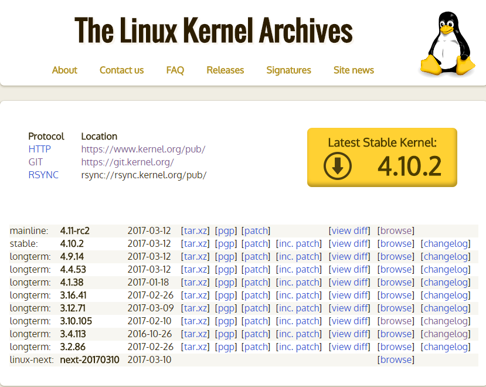
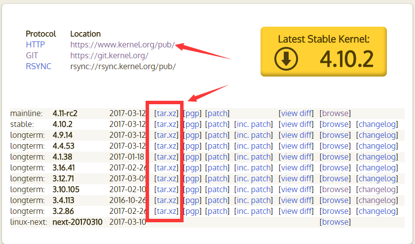
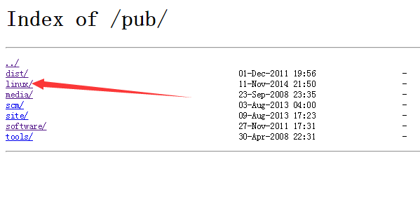
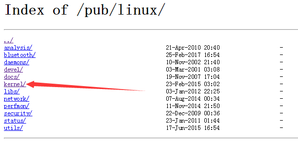
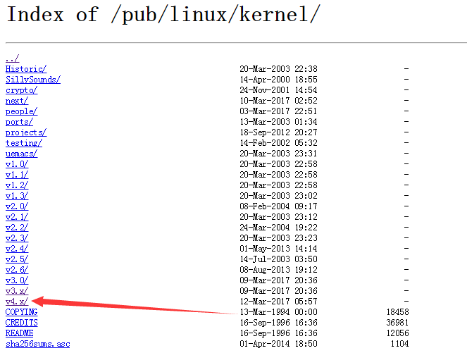
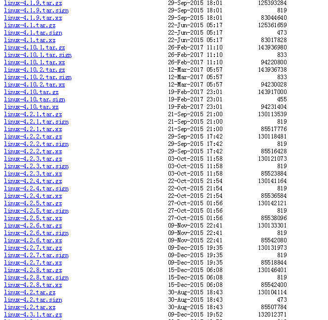
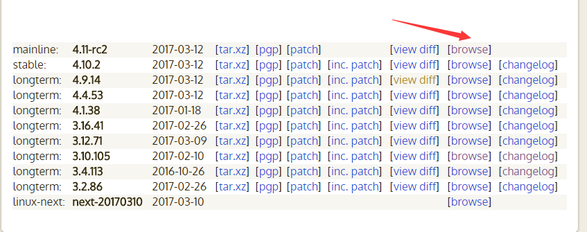
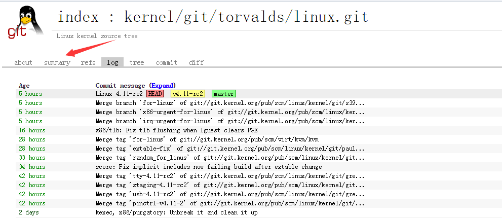
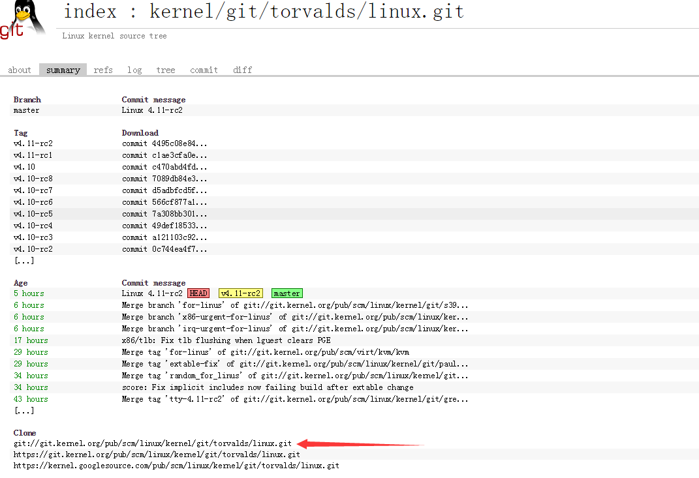

Linux内核的简介和源码获取
参考： http://www.linuxidc.com/Linux/2011-08/40049.htm
http://www.cnblogs.com/linuxbo/p/4304935.html
Linux 内核简介
Linux是最受欢迎的自由电脑操作系统内核。它是一个用C语言写成，符合POSIX标准的类Unix操作系统。Linux最早是由芬兰黑客 Linus Torvalds为尝试在英特尔x86架构上提供自由免费的类Unix操作系统而开发的。该计划开始于1991年，这里有一份Linus Torvalds当时在Usenet新闻组comp.os.minix所登载的贴子，这份著名的贴子标志着Linux计划的正式开始。在计划的早期有一些Minix 黑客提供了协助，而今天全球无数程序员正在为该计划无偿提供帮助。技术上说Linux是一个内核。“内核”指的是一个提供硬件抽象层、磁盘及文件系统控制、多任务等功能的系统软件。一个内核不是一套完整的操作系统。一套基于Linux内核的完整操作系统叫作Linux操作系统，或是GNU/Linux。Linux是一个宏内核（monolithic kernel）系统。设备驱动程序可以完全访问硬件。Linux内的设备驱动程序可以方便地以模块化（modularize）的形式设置，并在系统运行期间可直接装载或卸载。
Linux 内核版本号
第一种方式：
Linux的版本号分为两部分，即内核版本与发行版本。内核版本号由3 个数字组成：r.x.y。r：目前发布的内核主版本。
- x：偶数表示稳定版本；奇数表示开发中版本。
- y：错误修补的次数。
一般来说，x位为偶数的版本是一个可以使用的稳定版本，如2.4.4；x位为奇数的版本一般加入了一些新的内容，不一定很稳定，是测试版本，如2.1.111。
- 第二种方式：
major.minor.patch-build.desc
2.26.35-rc5
- major：表示主版本号，有结构性变化时才变更。
- minor：表示次版本号，新增功能时才发生变化；一般奇数表示测试版，偶数表示生产版。
- patch：表示对次版本的修订次数或补丁包数。
- build：表示编译（或构建）的次数，每次编译可能对少量程序做优化或修改，但一般没有大的（可控的）功能变化。
- desc：用来描述当前的版本特殊信息；其信息由编译时指定，具有较大的随意性，但也有一些描述标识是常用的，比如：
- rc（有时也用一个字母r），表示候选版本（release candidate），rc后的数字表示该正式版本的第几个候选版本，多数情况下，各候选版本之间数字越大越接近正式版。
- smp，表示对称多处理器（Symmetric MultiProcessing）。
- pp，在Red Hat Linux中常用来表示测试版本（pre-patch）。
- EL，在Red Hat Linux中用来表示企业版Linux（Enterprise Linux）。
- mm，表示专门用来测试新的技术或新功能的版本。
- fc，在Red Hat Linux中表示Fedora Core。
如果在生产机上，最好不要安装小版本号是奇数的内核。同样，pre-patch的内核版本也不建议安装在生产机上。
内核源码获取
Linux 内核版本大概有下面几种类型：
- mainline 主线版本，指由Linus Torvalds亲自制作的内核发布版，是官方当前最新版本的kernel source。在Torvalds对所有其他程序员所做出的重大变化进行整合，并且对先前版本的bug进行几轮修复之后，大约每十周正式发布一个新版本。mainline事实上代表着一个linux kernel分支，这个分支有另一个名称，叫做vanilla。
- stable 稳定版本
- longterm 长期支持版Long Term Support
- EOL 结尾的版本，不再支持的版本
- linux-next，snapshot 都是代码提交周期结束之前生成的快照 用于给Linux代码贡献者们做测试。
获取源码可以从内核官网获取：
Linux 内核官网： https://www.kernel.org/

有两种方式，一种是直接下载tar包，一种是用git 来下载
下面先说下第一种：
如果内核官网首页有你需要的压缩包直接点击红框中tar.gz 就可以下载了，没有的话可以按照下面的方法去下载对应版本





第二种方式通过git 来下载，如何使用git可以参考百度，这里主要是说下如何得到git clone 需要的源码地址，上图



复制git clone的地址去终端下载吧！
转载本站原创内容请注明作者砦龑堃及出处http://ykzhai.top/2017/03/13/Linux/内核/Linux内核源码的获取/